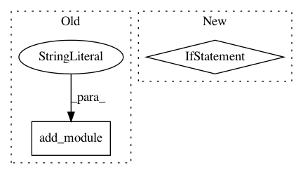

3861825719b8e6ef042799cdb7861a72e11eb3bb,pytorch/pytorchcv/models/others/oth_resattnet4.py,AttentionModule_stage1,__init__,#AttentionModule_stage1#Any#Any#,443
Before Change
nn.MaxPool2d(kernel_size=3, stride=2, padding=1),
ResBlock(in_channels, out_channels)
))
down_seq.add_module("down3", nn.Sequential(
nn.MaxPool2d(kernel_size=3, stride=2, padding=1),
nn.Sequential(
ResBlock(in_channels, out_channels),
ResBlock(in_channels, out_channels)
)
))
up_seq = nn.Sequential()
up_seq.add_module("up1", nn.Sequential(
ResBlock(in_channels, out_channels),
InterpolationBlock2(scale_factor)))
After Change
up_seq.add_module("up{}".format(i + 1), nn.Sequential(
ResBlock(in_channels, out_channels),
InterpolationBlock2(scale_factor)))
if i == 0:
skip_seq.add_module("skip1", nn.Sequential(
ResBlock(in_channels, out_channels),
ResBlock(in_channels, out_channels)))
else:
skip_seq.add_module("skip{}".format(i + 1), DoubleSkipBlock(in_channels, out_channels))
self.hg = Hourglass(
down_seq=down_seq,
up_seq=up_seq,
skip_seq=skip_seq,
In pattern: SUPERPATTERN
Frequency: 5
Non-data size: 2
Instances
Project Name: osmr/imgclsmob
Commit Name: 3861825719b8e6ef042799cdb7861a72e11eb3bb
Time: 2018-12-03
Author: osemery@gmail.com
File Name: pytorch/pytorchcv/models/others/oth_resattnet4.py
Class Name: AttentionModule_stage1
Method Name: __init__
Project Name: osmr/imgclsmob
Commit Name: c790ec7ea5053731431409a7a4f8f9563d780425
Time: 2021-02-12
Author: osemery@gmail.com
File Name: pytorch/pytorchcv/models/others/_sqnet.py
Class Name: FireBlock
Method Name: __init__
Project Name: ultralytics/yolov3
Commit Name: 3bfbab7afd5850b4f21b73dd3184374f47eb1d98
Time: 2019-12-09
Author: glenn.jocher@ultralytics.com
File Name: models.py
Class Name:
Method Name: create_modules
Project Name: interactiveaudiolab/nussl
Commit Name: 5dec8de970eb520f6d4e6cc6c7934eb564a42a6c
Time: 2020-03-02
Author: prem@u.northwestern.edu
File Name: nussl/ml/networks/modules.py
Class Name: RecurrentStack
Method Name: __init__
Project Name: reinforceio/tensorforce
Commit Name: 07bcc8f463d5e45a0c3219c74c924e24a0487bd0
Time: 2020-03-30
Author: alexkuhnle@t-online.de
File Name: tensorforce/core/models/tensorforce.py
Class Name: TensorforceModel
Method Name: __init__